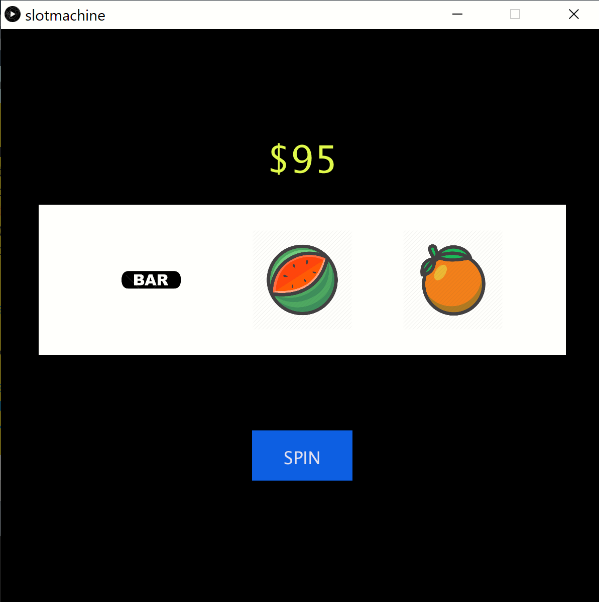
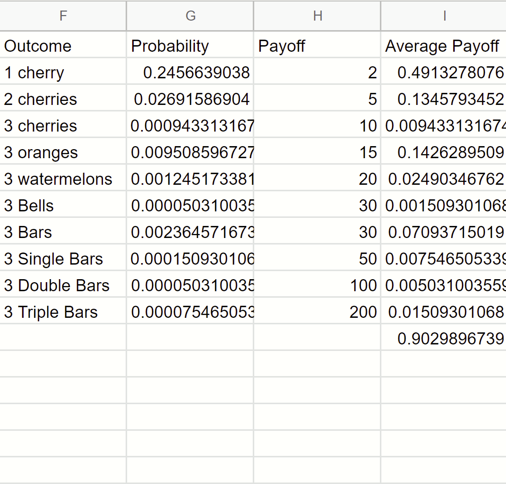
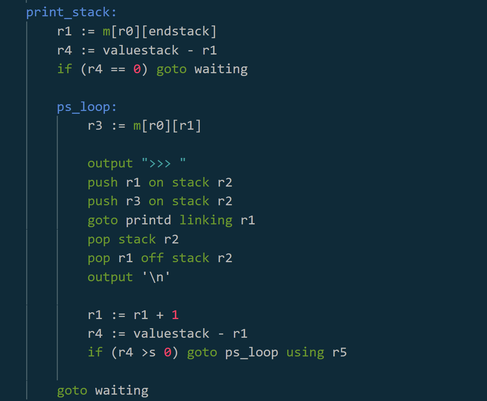
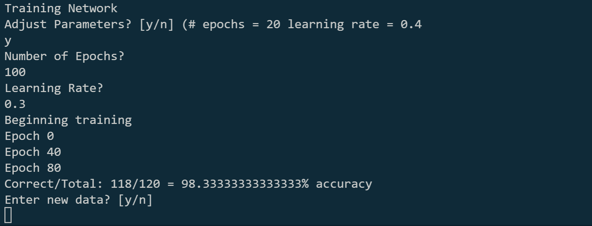
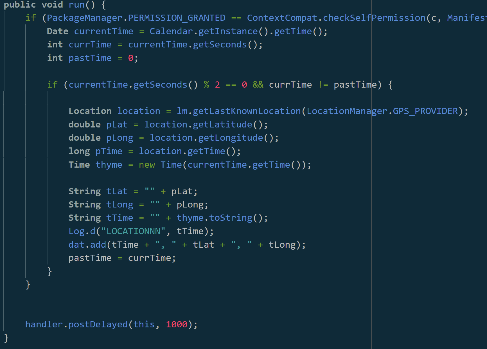
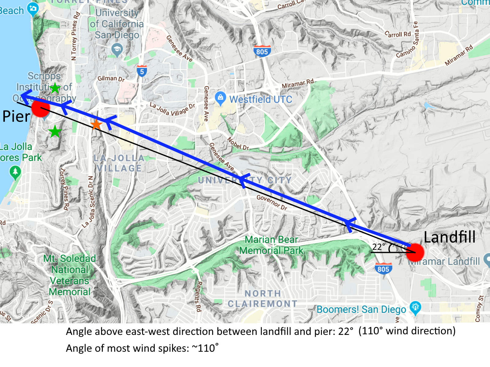
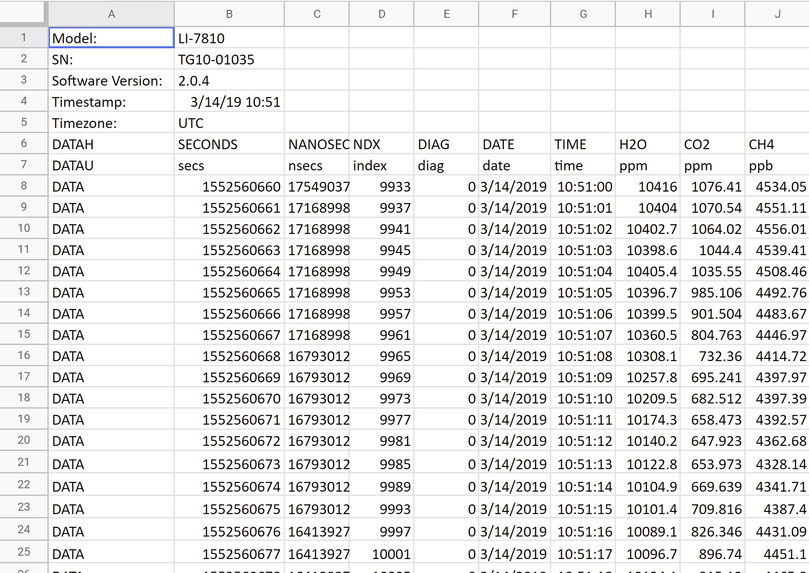
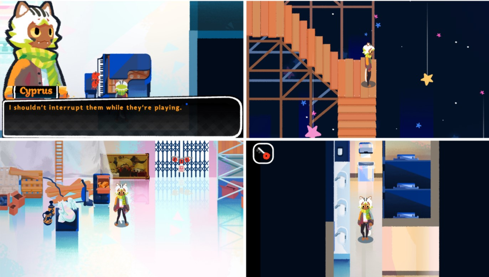
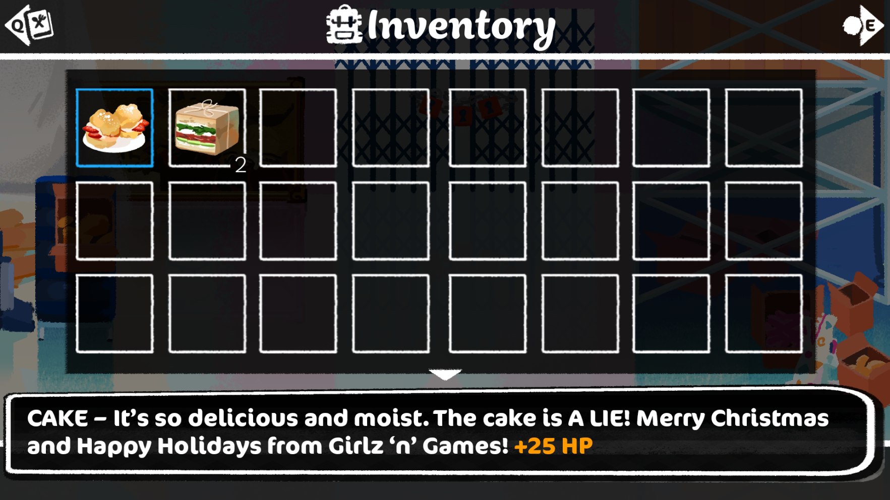
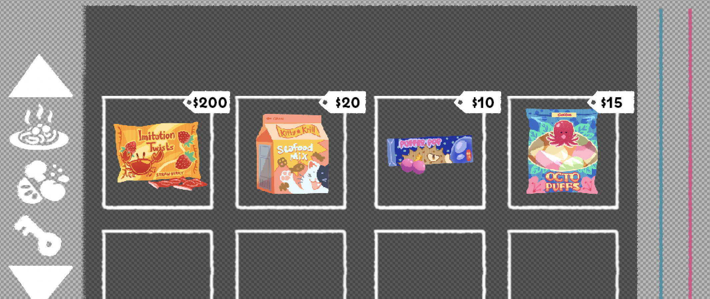

A lot of my favorite projects were born from class assignments that I got the opportunity to put a lot of good hours into. Here are some of my projects that I'm particularly proud of that don't fall into the other categories.
Slot Machine
For my statistics class, we were asked to design a slot machine. We were given a preset list of objects that would be on the wheels and what combinations of objects resulted in what dollar amount. Our project was to turn in the three wheels of the slot
machine, each represented as a list of objects and their count per wheel. The goal was to find an average payoff per spin between 0.9 and 1 dollar, just enough to keep players invested but also making sure the house wins. I wanted to visualize
this and make it into something a bit more fun than just some numbers, so I created a processing sketch that lets you play the slot machine I designed.



Assembly code for printing calculator stack trace
RPN Calculator in Assembly
For my Machine Structure and Programming course, our final assignment was to write a Reverse Polish Notation calculator in a custom assembly language. The language was designed for a hypothetical computer with 8 registers on the CPU, making most operations
quite difficult as at any given time, I only had 3 (in rare cases 4) registers to work with for each function. This project taught me a lot about assembly and program design and I'm quite proud of the final result.
Simple Neural Network
The last assignment for my Artificial Intelligence class at Tufts was to create a neural network that takes in 4 measurements of a plant and classifies it to one of 3 species within the genus Iris using one hidden layer. I expanded
my neural network to be able to handle multiple layers and different sizes of layers, thus making it a tool I can fit to any simple classification task. The code only makes use of default python libraries as well as numpy.

Scripps Internship
Starting in March 2019, I had an internship under Dr. Jooil Kim at the Scripps Institute of Oceanography. I worked with him on one of his projects that was seeking to explain mysterious spikes in methane levels being read by their sensors on the La Jolla
shores pier. We used a portable Li-Cor to read data in specific locations throughout San Diego County. To aid with data collection, I wrote an Android applet that recorded my location at regular intervals to get a path with timestamps.
This way we could line up the Li-Cor readings with our location and potentially find the source of the spikes. For more information, read my brief paper summarizing our process here.

Applet main code

Wind path at time of spikes

Li-Cor Data
Video Game Development
Developing video games was how I was introduced to programming and throughout the years I've put many hours into a fair few projects and I'm proud of many of them. None of them have been fully fleshed out, but each one taught me new techniques and technologies
and I've loved working on all of them. Some of these projects were for a class and some on my own time. A lot of them were collaborative efforts that taught me how to work well with other programmers and team members.
Web Games
Both of these projects were developed in a team for a web programming class I took my sophomore year of high school (2017-2018), and are able to be run in a browser. The first game uses p5.js via OpenProcessing, and the second was written
in JavaScript.
Cattack
Cattack was developed with two of my friends and its style was designed to look like a cat attempted to make it. The awful graphics are an intentional choice, I promise. It's a short level based puzzle game that focuses on 3 different cats
each with their own speeds and abilities.
Tanks
Tanks was made with a partner as our final JavaScript project. I'm very proud of the pathfinding algorithm the enemies use, and I remember the difficulty getting the enemies to properly swarm and pathfind towards the player. It's a short game
but taught me a lot about web game development
Homecooked is an indie RPG-style game that I was introduced to a couple months into its development. This project was a ton of fun and taught me a lot about working with a team, not just of programmers, but of artists and directors as well. I got the
chance to design a lot of UIs for the game as well as the entire inventory and shop system. Additionally, I got to work on the enemies, getting their behavior to be both reasonable for gameplay and customizable for different types of enemies.
Another fun project was writing up demo minigames in Java before implementing the demos in GameMaker Studio. But perhaps my favorite feature was adding in a lighting and sound system. The lighting was designed so our artists could draw
overlays that would then be cast onto the character depending on where they were in the room. The sound system worked in a similar way, using a hidden tileset layer and the players' location to determine the sound the footsteps should
make. It was a lot of fun to work on all of these aspects of the game. The game is available on itch.io



Robotics
High School Projects
My junior and senior year of high school (2018-2020) I got a lot of opportunities to do robotics work inside and outside of the classroom. In my robotics class junior year I got to work with Arduino hardware, Vex robots, and Leap Motion Controllers. My
project with the Leap Motion Controller was a lot of fun, as I programmed from scratch a ragdoll in Processing and then using the Leap, I was able to control multiple ragdolls in an environment using just my hands. Senior year I got to
work on a yearlong project and I began work on a drone. A lot of the first months was spent on researching and ordering components. Once I got everything I needed, I got to embark on a very long learning process as I now had to focus exclusively
on the hardware. Around February 2020 I was able to test the drone's propellors for the first time. A mishap led to having to spend some time designing safety precautions, and I then began to work on integrating the gyro sensor into my
code to stabilize takeoff. Unfortunately it was at this time COVID-19 shut down everything and I lost access to my drone. But I learned a ton in the process, especially on the design and hardware side.
Human Robot Interaction Lab
In June 2022, I began working under Chris Thierauf at the Human Robot Interaction Lab at Tufts University. His research is in robot resiliency, both in making individual robots better at problem solving in unique scenarios as well as using
teams of robots to have robots help each other troubleshoot. My work at the lab has been focused on the Spot robot developed by Boston Dynamics. My first project was to increase the capabilities of the Spot by incorporating numerous sensors
and a LoRa radio device. The sensors were designed to increase both the robots perception of the environment and its ability to interact with people. I wrote several ROS packages for each, the largest of which included a library I wrote
in C to give the radios a P2P functionality. All these sensor packages were then bundled into a Docker image that gave the Spot full use of the "backpack." Next, I worked on developing a global planner in the established DIARC codebase.
This planner gave the Spot the ability to navigate the entire floor of the building the lab was in, including through doors (locked and unlocked, as it was able to remember door states and reroute.) Most recently, I have been working on
a local planner to increase the Spot's mobility as existing ROS default navigation stacks are insufficient for the Spot.